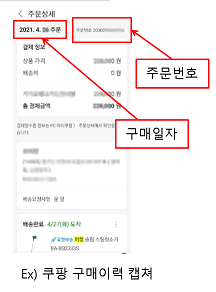

A/S 접수
*구매정보 확인 요청
개인정보 보호법에 의거하여 고객님들의 구매정보는 해당 구매처에서 관리 및 보관하며,
당사는 그 정보를 열람할 권한이 없습니다. 이에 따라 고객님들께서는 구매후 1년이내라는 구매정보를 직접 전달해 주시길 바랍니다.
※ 공식판매처가 아니거나 중고거래로 인한 제품에 대해서는 무상 수리 서비스를 지원하지 않습니다.
※ 유상 A/S의 경우 별도의 구매정보 없이도
A/S 접수가 가능합니다.
*홈쇼핑 구매 고객
1.구매한 홈쇼핑 고객센터로 문의
2.구매처/구매일/주문번호를 확인
스팀청소기 홈쇼핑 고객센터
홈앤쇼핑 1666-1111
K쇼핑 1899-2211
GS쇼핑 1899-4500
SK스토어 1566-0106
W쇼핑 1644-4949
CJ쇼핑 1644-2525
*인터넷 구매 고객
주문했던 사이트 방문 -> 로그인 ->
구매이력 -> 주문번호/주문일자 확인
※ 쿠팡&스마일배송 구매 고객님들의 경우
주문내역 캡쳐 본파일을 첨부해주시길 바랍니다.

*오프라인 구매 고객
오프라인 구매확인증 내용 확인